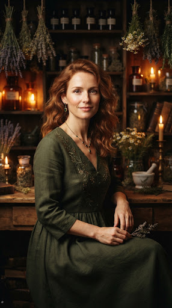
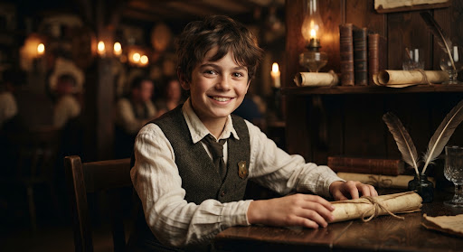
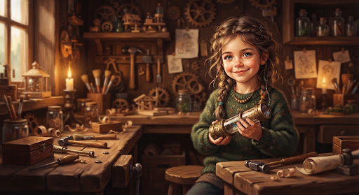
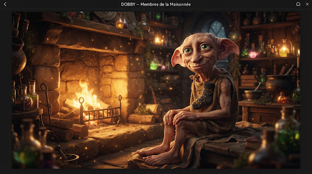

Thomas
PèreChef de foyer
🎂 14 Novembre (dans 24 jours)
📜 3 documents
⏰ 2 rendez-vous
🎒 Missions assignées
Grimoire & reliques complètes
« Retrouvez la fiche de chaque habitant, ses reliques de documents, ses rituels et ses rendez-vous consacrés au sein de l’âtre familial. »
Chef de foyer
🎂 14 Novembre (dans 24 jours)

Gardienne des rituels
🎂 28 Mai

12 ans • Collégien apprenti
🎂 3 Mars

8 ans • Petite artiste
🎂 19 Juillet

Protecteur de l'Âtre & Esprit bienveillant
🎂 28 Juin • Fête de la liberté
« Aucun habitant du logis ne répond à cette incantation dans nos archives actuelles. »
Le parchemin d'inscription s'ouvre sous votre plume...